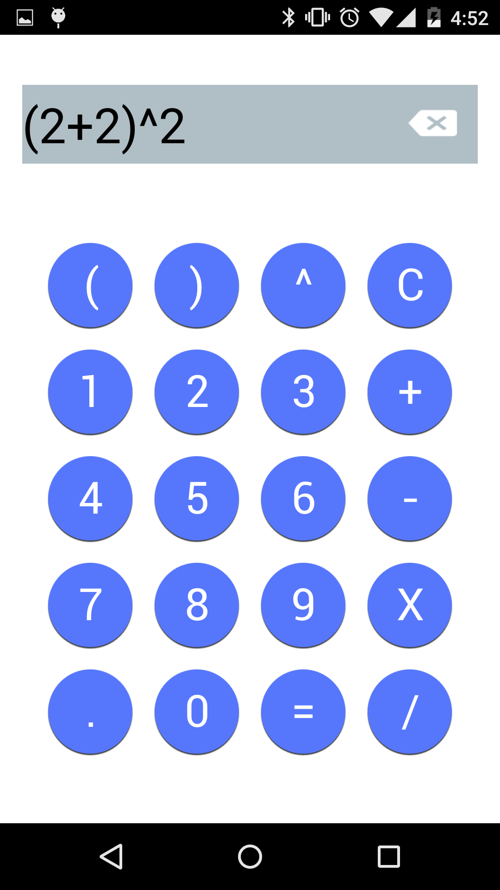
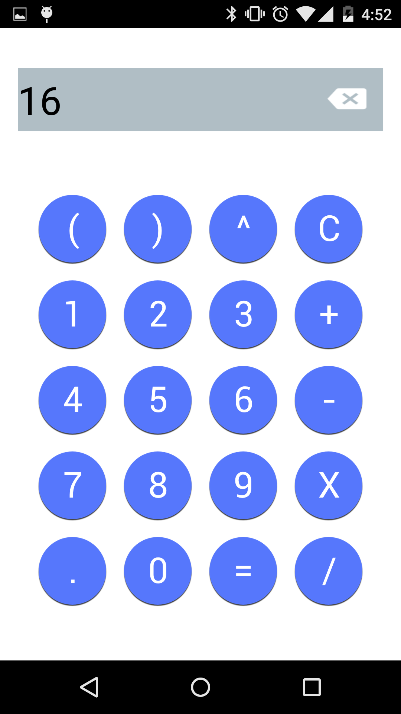

<link rel="import" href="../bower_components/polymer/polymer.html">
<link rel="import" href="../bower_components/core-scaffold/core-scaffold.html">
<link rel="import" href="../elements/card.html">
<polymer-element name="my-calc" noscript>

    <template>
    <style>
    
    post-card {
          margin-top: 10px;
          margin-bottom: 10px;
    }

    .img-post {
        height:25%;
        width:25%;
        display: table; /* shrink wrap the contents */
        margin: 0 auto;


    }

    .double-img{
        height:55%;
        width: 55%;
        display: table; /* shrink wrap the contents */
        margin: 0 auto;
    }
    .triple-img{
        height:70%;
        width: 70%;
        display: table; /* shrink wrap the contents */
        margin: 0 auto;
    }

    


    </style>
        <post-card>
            <h1>First Android App</h1>
            <h4>2/16/2015</h4>

            <b><a href="https://github.com/James-Reilly/SimpleCalc">SimpleCalc on GitHub</a></b> 
            </br>
            <h3>Main Timeline Setup</h3>
            <p> 
            &nbsp;&nbsp;&nbsp;&nbsp;This was my first attempt of an Android Application using the knowledge of Java I gained from my first semester at RIT. It was developed over my fall semester of my second year.  It parses the infix expression given using the Shunting Yard Algorithm.  The algorithm allows the calculator to do complex expression and still maintain order of operations.</br> 
            </p>
            <p>
            <div class="double-img">
                     
                
            </div>

        </post-card>
        
    </template>
</polymer-element>